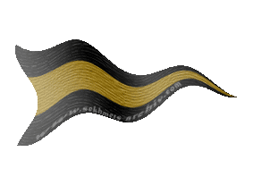
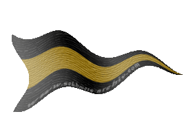

| Übersicht,
Anschläge und Stammtisch (RPG) |
|
Bund der Ehe
|
Nemetes Ar-Faêníel
   |
Es sei in einem langen Leben
das junge Paar von Glück umgeben.
Was immer in der Welt geschehe:
Stets liebevoll sei Eure Ehe!
Nach Glückwunsch ist mir sehr zumute:
Dem künftigen Paare alles Gute!
Es grüßt Euch herzlich,
Tessi
Nemetes
Zur 13. Stunde am 82.Erntemond im Jahre 415 |
20.04.04 6:41
 |
|
| Dinanoonwen (RIP) |
Habt dank, für die vielen lieben Wünsche.
Ich freue mich, den ein oder anderen heute abend zu sehen und hoffe auf ein zahlreiches Erscheinen....
Gruß
Dinanoonwen,
Vorsteherin von Tanelorn,
Ratsmitglied und Geschichtschreiberin der HdL
Zur 13. Stunde am 2.Dunkelfrost im Jahre 415 |
22.04.04 14:38
|
|
| Brendan (RIP) |
*liest den anschlag und bemerkt bitter, dass er keine einladung bekommen hat*
Sir Brendan,
Vorsteher von Schädelfels
Zur 13. Stunde am 2.Dunkelfrost im Jahre 415 |
22.04.04 14:41
|
|
| seth béliar (RIP) |
Ich wünsche euch alles Gute.
Gollor,
Priester im Dienste des einzig wahren Glaubens an Pheron
Zur 14. Stunde am 2.Dunkelfrost im Jahre 415 |
22.04.04 14:51
|
|
| Fenwae (RIP) |
Meinen herzlichen Glückwunsch zu Eurem Glück. Möge Pheron über Euren gemeinsamen Weg wachen.
Werter Brendan, diese Einladung ging an alle, so steht es jedenfalls geschrieben. Daher kein Grund zur Bitterkeit. An so einem wundervollen Tage ist doch nur ein Lächeln angebracht.
Fenwae,
Priesterin im Dienste des einzig wahren Glaubens an Pheron,
Erzkanzlerin des Ordens der Paladine
Zur 22. Stunde am 2.Dunkelfrost im Jahre 415 |
22.04.04 16:44
|
|
| mefilas (RIP) |
möge eure ehre ewig halten!
ihr gebt ein prächtiges paar ab!
auf euch!
*verlässt springend den anschlag und murmelt: "wann,, wann werde ich heiraten?"*
mefilas
Zur 22. Stunde am 2.Dunkelfrost im Jahre 415 |
22.04.04 16:49
|
|
| Dr. Nightmare (RIP) |
Heute zur 20. Stunde am 3. Dunkelfrost im Jahre 415 wurden Dinanoowen und ich, Khazar Darlon getraut.
Ich möchte mich an dieser Stelle bei allen Gästen bedanken.
Mögen die 7 über euch Wachen!
Ein glücklicher,
Khazar Darlon,
Ehemann der reizenden Dinanoonwen
Zur 20. Stunde am 3.Dunkelfrost im Jahre 415 |
22.04.04 21:52
|
|
| Fáin Cortez (RIP) |
Herzglichen Glückwunsch
Sir Fáin Senémis,
Vorsteher von Esturia d`Oro,
Priester im Dienste des einzig wahren Glaubens an Pheron,
Innenminister der Ritter Esturiens,
Ehemann der reizenden Valeska Senémis
Zur 20. Stunde am 3.Dunkelfrost im Jahre 415 |
22.04.04 21:53
|
|
| Dagorineth (RIP) |
Meine Glückwünsche an das frischvermählte Paar und Hochachtung an Fain, welcher die Trauung vollzogen hat.
Dagorineth,
Diplomatin des Ordens der Paladine
Zur 20. Stunde am 3.Dunkelfrost im Jahre 415 |
22.04.04 21:55
|
|
| Dinanoonwen (RIP) |
Auch ich möchte mich für das zahlreiche Erscheinen bedanken. Diesen Tag werde ich wohl immer in Erinnerung behalten.
Besonderen Dank an Fain, der seine Sache als Priester nicht hätte besser machen können.
Die 7 zum Gruße
Dinanoonwen,
Vorsteherin von Tanelorn,
Ratsmitglied und Geschichtschreiberin der HdL,
Ehefrau des ehrenwerten Khazar Darlon
Zur 20. Stunde am 3.Dunkelfrost im Jahre 415 |
22.04.04 21:57
|
|
| Rohezal (RIP) |
Salve,
Pheron mit euch.
Pax vobiscum,
Rohezal
Rohezal
Zur 20. Stunde am 3.Dunkelfrost im Jahre 415 |
22.04.04 21:57
|
|
| Monty McMariner (RIP) |
*schwankend an den Anschlag herantritt*
War einen sehr schöne Zeremonie, und die Feier danach erst ;)
Wünsch Euch beiden alles gute für die Zukunft!
*den Zettel anheftet und hicksend vondannen geht*
MfG
Sir Monty McMariner,
Anführer der glorreichen Nation "Breariach",
Earl of Moray Firth
Zur 21. Stunde am 3.Dunkelfrost im Jahre 415 |
22.04.04 22:02
|
|
| Monty McMariner (RIP) |
*zurück eilt*
achja, der Hand gehts übrigens prima Pastor Fain ;)
Sir Monty McMariner,
Anführer der glorreichen Nation "Breariach",
Earl of Moray Firth
Zur 21. Stunde am 3.Dunkelfrost im Jahre 415 |
22.04.04 22:04
|
|
| Fáin Cortez (RIP) |
*lacht* Wer zu viel sabbelt der bekommt pfeil in die hand *lacht*
Sir Fáin Senémis,
Vorsteher von Esturia d`Oro,
Priester im Dienste des einzig wahren Glaubens an Pheron,
Innenminister der Ritter Esturiens,
Ehemann der reizenden Valeska Senémis
Zur 22. Stunde am 3.Dunkelfrost im Jahre 415 |
22.04.04 22:29
|
|
| Aimee (RIP) |
Werter Khazar Darlon,
leider konnte ich bei der Trauungszeremonie nicht anwesend sein, doch wünsche ich euch und eurer Gattin das allerbeste. Wünsche euch Glück für die Zukunft und immerwährende Freude.
Aimee
Zur 9. Stunde am 4.Dunkelfrost im Jahre 415 |
23.04.04 1:01
|
|
| Gwendolyn (RIP) |
Liebe Schwester, werter Khazar,
ich wünsche Euch beiden alles Glück der Scherbe. Die Trauung war wunderschön...
Lady Gwendolyn,
Anführerin der glorreichen Nation "Freie Union Chaotischer Kumpel"
Zur 10. Stunde am 4.Dunkelfrost im Jahre 415 |
23.04.04 1:16
|
|
| Nalon din Adun (RIP) |
Ich bedanke mich für die Einladung und die Ehre zu dieser Hochzeit und der Feier danach eingeladen gewesen zu sein.
Wirklich sehr ergreifend und ähh feuchtfröhlich.
Meine besten Wünsche an das Paar, mögen die 7 ihnen wohlgesonnen sein und immer Sonne auf diese Verbindung scheinen.
Baron Nalon din Adun,
Vorsteher von Trucan,
Anführer der glorreichen Nation "Atha´an Miere",
Herr der Wogen der Atha´an Miere
Zur 12. Stunde am 6.Dunkelfrost im Jahre 415 |
23.04.04 12:55
|
|
| Kharas (RIP) |
Auch ich möchte meine Wünsche dem Brautpaar kundtun.
Es war eine wirklich schöne Hochzeit...
Möge eure Liebe ewig währen.
Freiherr Kharas,
Bewahrer ALVERANS
Zur 13. Stunde am 6.Dunkelfrost im Jahre 415 |
23.04.04 13:07
|
|
| Monty McMariner (RIP) |
*steht Stirnrunzelt vor dem Anschlag*
sabbeln?! Fain?! ich habe stillschweigen mit der Hand eine Gehste der Begrüssung getätigt *g*
Sir Monty McMariner,
Anführer der glorreichen Nation "Breariach",
Earl of Moray Firth
Zur 20. Stunde am 6.Dunkelfrost im Jahre 415 |
23.04.04 14:44
|
|
| Nolan aus dem Hause Tyrion (RIP) |
alles gute euch beiden!!
Nolan aus dem Hause Tyrion
Zur 20. Stunde am 7.Dunkelfrost im Jahre 415 |
23.04.04 20:21
|
|
| Murdock (RIP) |
Auch von mir alles Gute zur Hochzeit nachträglich! Möge Pheron Euch beschützen in guten, wie in schlechten Zeiten.
Grüsse,
Aratas,
Vorsteher von Asgards Gate
Zur 16. Stunde am 8.Dunkelfrost im Jahre 415 |
24.04.04 1:00
|
|
Übersicht,
Anschläge und Stammtisch (RPG)
|